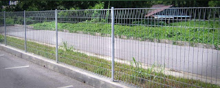
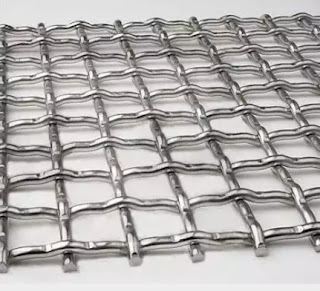

Jual Genteng Metal di Pekanbaru ☎ ??? (www.dis.or.id)
Galvalum sudah menjadi primadona bagi banyak orang yang bekerja dalam industri pembangunan. Atap adalah bagian penting sebuah bangunan yang fungsinya untuk menaungi sebuah bangunan. Karena tanpa atap maka sebuah bangunan tidak dapat disebut bangunan dan hanya dapat disebut sebagai bangunan terbengkalai. Disini, galvalum mempunyai peran penting sebagai atap sebuah bangunan. Pada kesempatan kali ini saya akan membahas beberapa jenis atap, seperti atap galvalum, atap lengkung, seng gelombang, plat seng & plat galvalum dan masih banyak lagi. Tidak tertarik dengan galvalum? Maka masih tersedia genteng metal yang akan saya bahas di pertemuan kita kali ini. Maka beberapa penjabaran kami dapat anda simak.
Distributor & Supplier Genteng Metal

Keberadaan genteng metal Pekanbaru sudah menggantikan genteng konvensional yang terbuat dari tanah liat. Genteng metal dinilai lebih praktis dan lebih awet. Apakah anda sedang mencari genteng metal Pekanbaru berkualitas? Maka anda berada di tempat yang tepat, silakan kunjungi dis.or.id dan dapatkan info menarik khusus untuk anda yang ingin segera mengetahui keunggulan genteng metal Pekanbaru ini.
Karena kepuasan dan kepercayaan pelanggan adalah segalanya bagi kami. Bila belum percaya, maka anda dapat mengujungi situs official kami di dis.or.id untuk mendapatkan info yang lebih lanjut dan dapatkan penawaran terbaik dari kami khusus untuk anda.
Info Pemesanan Selengkapnya
Google Maps: https://www.google.com/maps/d/u/0/viewer?mid=18K_Vf8GKnjN9AtE2jUMATDSYvScojDst&ll=-7.269373870070218%2C112.655575&z=16
Note: https://www.facebook.com/notes/distributor-of-industrial-supply/pabrik-supplier-genteng-metal/1783191985314014/
Event: https://www.facebook.com/events/1480458558737554/
Portfolio Produk: https://www.facebook.com/pg/DistributorOfIndustrialSupplyDIS/photos/?tab=album&album_id=1683750531924827
Distributor & Supplier Besi Beton

Beragam jenis beton tersebut bisa diaplikasikan untuk berbagai kebutuhan pembangunan. Pendidikan sangat penting karena digunakan dalam berbagai bentuk struktur bangunan baik bangunan kecil maupun bangunan besar seperti jembatan, Bendungan, terowongan dan masih banyak lagi. Dan besi beton polos memiliki penampakan benda dengan permukaan licin atau tidak bersirip.
Besi beton polos sangat jarang digunakan kecuali digunakan sebagai kolom.
Salah satu cara untuk mendapatkannya adalah dengan membeli di dis.or.id. Di sana anda akan mendapatkan berbagai macam jenis serta ukuran dari besi beton dengan harga yang cukup terjangkau dan mutu yang sangat terjamin. Karena, disan anda bisa mendapatkan besi beton yang anda inginkan yang pastinya sesuai dengan yang anda ekpetasikan.
Distributor & Supplier Steel Grating

Plat Grating merupakan suatu jenis plat besi yang terbuat dari rangkaian semisal sekrup besi dan plat jalur. Plat Grating tersebut dibuat dari jenis baja dengan kualitas yang tinggi kemudian dilas antara satu dengan yang lain. Untuk permukaan atas bagian kiri didesain bergerigi agar tidak membahayakan Anda. Bahan yang berkualitas ini memudahkan para konsumen dalam melakukan pembangunan dengan memperoleh hasil maksimal.
Anda bisa langsung mendapatkan plat grating dengan kualitas terbaik dengan harga yang cukup terjangkau dengan hanya mengunjungi dis.or.id. Terdapat banyak jenis steel grating yang di jual sehingg anda dapat dengan mudah memilih sesuai dengan kebutuhan.
Distributor & Supplier Pipa (Hitam/Gas, Galvanis)
.jpg)
Apa bedanya pipa hitam gas dibanding dengan jenis pipa biasa? Perbedaan antara kedua pipa ini bisa anda lihat langsung pada pengaplikasiannya. Pipa hitam gas galvanis memiliki kekuatan yang tidak dapat diragukan, bagian luar pipa juga telah terlapis stainless steel sehingga menjadikannya tahan korosi. Pipa hitam gas galvanis banyak digunakan untuk keperluan area pertambangan minyak gas, untuk itu banyak juga yang mengira pipa hitam ini adalah pipa gas. Anda bisa memesan pipa hitam ini dari ukuran ½ inci sampai 40 inci. Segera hubungi kami untuk info pemesanan selengkapnya maupun berkonsultasi mengenai kebutuhan pipa secara langsung.
Distributor & Supplier Kawat Bronjong/Gabion

Umumnya, kawat ini dipasang di tebing yang rawan sekali mengalami longsor, terutama ketika musim hujan tiba. Bentuknya sama seperti kawat pada umumnya. Hanya saja, Anda harus tahu kawat ini terbuat dari baja. Agar tidak berkarat sehingga bisa bertahan dalam kurun waktu yang lama, kawat ini dibuat dari bahan galvanis yang anti karat. Maka dari itu, kekuatannya untuk menahan tebing tinggi yang mungkin bisa longsor tidak perlu dipertanyakan lagi. Tujuannya agar bebatuan tidak hancur karena terkena ombak terus menerus. Kawat bronjong ini juga bisa berfungsi sebagai pengaut tebing miring di mana di atas tebing tersebut mungkin terdapat bangunan atau jalan.
Kawat bronjong kini dapat anda temui dan dapatkan dengan mengunjungi dis.or.id. Sehhingga, anda bisa leluasa memilih kawat bronjong mana yang susuai dengan yang anda butuhkan.
Distributor & Supplier WF H-beam

Besi WF kini banyak dikenal sebagai salah satu jenis profil baja Struktural yang berkualitas. Konstruksi baja banyak yang memakai besi ini untuk bahan bajanya. Di samping itu, kepadatan yang tinggi juga dimiliki oleh besi jenis ini sehingga kualitasnya memang benar-benar terjamin. Besi WF memiliki daya tahan terhadap suatu bangunan.
Jika membawanya Anda juga tidak perlu khawatir keberatan karena besi ini lebih ringan dan praktis.
Kini anda bisa mendapatkan besi WF H-beam dengan sangat mudah, caranya anda bisa langsung saja datang ke dis.or.id. Disana anda bisa mendapatkan besi wf yang anda inginkan. Pastinya dengan harga yang sangat terjangkau.
Distributor & Supplier Expanded Metal

Expanded metal atau yang biasa dikenal dengan sebutan X.P.M. ini merupakan salah satu produk hasil dari kemajuan teknologi saat ini. Oleh sebab itu, expanded metal ini diyakini akan bisa lebih tahan lama dan juga lebih kuat. Sedangkan untuk keunggulannya sendiri adalah memiliki bentuk yang indah dan juga homogen, lebih vareatif dalam hal pengaplikasiannya, relatif lebih ringan, dan lebih mudah dipasang. Selain itu, Expended Metal juga dikenal mampu menahan beban berat, memiliki permukaan yang anti slip/tidak licin, dan juga dikenal tahan karat untuk material yang dari alumunium.
Disana anda bisa menemukan dan memesan langsung expanded metal yang anda butuhkan.
Distributor & Supplier Plat (Hitam, Kapal, Bordes, Strip)

Plat yang satu ini mungkin yang paling banyak kita jumpai, bukan sebagai plat bahan bangunan namun sering digunakan sebagai plat lantai pabrik, kendaraan dan berbagai fungsi lainnya. Karena dis.or.id adalah distributor pertama yang langsung mengambil barang dari pabrik. Plat besi bordes ini saat ini lebih banyak digunakan sebagai bahan pembuatan mobil, terutama mobil pengangkut seperti truk, pick up, dan lain sebagai nya.
Dis.or.id juga menawarkan plat hitam, kapal, bordes dengan ukuran yang telah anda tentukan. Disana terdapat berbagai macam plat yang anda butuhkan dan pastinya dengan harga yang sangat terjangkau. Tak perlu khawatir harga, karena harga yang di patok pastinya sangat murah dan terjangkau. Disini dis.or.id siap melayani anda untuk mencarikan plat yang anda inginkan.
Distributor & Supplier Floor Deck (Bondex)

Floor deck atau dikenal juga sebagai penyangga lantai cor, merupakan produk yang berfungsi menggantikan fungsi bekisting saat akan melakukan pengecoran plat lantai. Maka dari itu tidak mengherankan jika saat ini banyak yang lebih memilih menggunakan Floor Deck ini.
Jika anda saat ini sedang mebutuhkan floor deck dengan kualitas yang mumpuni, anda bisa langsung mengunjungi situs dis.or.id. Anda juga bisa langsung memesannya ataupun hanya ingin mengetahui detail harga yang di patok dari floor deck tersesbut.
Distributor & Supplier Atap Galvalum

Saat ini bangunan modern minimalis dan properti sudah sering dijumpai menggunakan atap galvalum. Sifat galvalum yaitu ringan dan tipis namun memiliki kualitas tinggi.
Primadona galvalum ini dinilai lebih efektif jika dibandingkan dengan galvanis. Galvalum atau biasa disebut baja ringan, terbukti mempunyai banyak kelebihan jika dibandingan dengan kayu. Atap galvalum memang menjadi salah satu incaran atap saat ini dikarenakan galvalum dinilai banyak orang lebih efektif jika dibandingkan dengan galvanis.
Jenisnya pun sangat beragam, ukurannya pun juga banyak sehingga gampang untuk menyesuaikan kebutuhan rangka atap anda. Anggapan ini sangat keliru, karena galvalum bukanlah atap seng pada umumnya. Bahannya yang terkomposisi dengan baik membuatnya tidak berisik bahkan ketika hujan, tahan lama dan anti karat. Jika dalam segi harga, kayu memang lebih murah.
Distributor & Supplier Atap Lengkung

Dewasa ini, atap lengkung sangat dibutuhkan bagi berbagai macam jenis bangunan. Atap dapat mempercantik bagian atas dari bangunan anda.
Bentuk dari setiap atap tersebut sangat beragam. Bahan penutup atap haruslah dari bahan yang kuat menahan berbagai macam kondisi cuaca. Seperti namanya, atap lengkung adalah atap yang bentuknya melengkung sehingga membuat bangunan yang dinaunginya terlihat megah.
Kekuatan dan keunggulannya kiat membuatnya semakin dicari orang. Maka sudah pasti bahwa kualitas atap tersebut sangat diragukan. Yaitu, lengkungannya yang sangat tidak biasa jika dibandingkan dengan atap galvalum yang lain. Maka anda akan mendapatkan penawaran dengan harga terjangkau. Maka anda sudah berada di tempat yang tepat. Kunjungi dis.or.id dan kami akan siap membantu kebutuhan anda.
Distributor & Supplier Truss Canal C

Sebagai informasi untuk anda, bahwa besi kanal C ini di kalangan para pekerja bangunan juga kenal dengan nama Besi CNP. Bangunan yang menggunakan besi kanal c juga tidak sedikit. Kedua istilah tersebut merujuk pada sebuah benda yang sama. Besi kanal C ini lebih banyak di pakai untuk atap sebuah rumah, terutama dalam membangun rangka atap nya. Jarak antar reng galvalume perlu diperhatikan. Lebih baik jika anda merencanakan semuanya dengan perhitungan yang benar dan tidak asal-asalan. Silakan kunjungi web dis.or.id untuk info lebih lanjut mengenai kebutuhan anda.
Distributor & Supplier Hollow Galvalum

Hollow Galvalum adalah bahan material bangunan yang terbuat dari logam dan bersifat anti karat. Kayu pun sudah digeser, dikarenakan keberadaan hollow galvalum ini. Namun dominasi bahan sebagian besar menggunakan alumunium dengan presetase rata rata 55%.
Jika kita berbicara masalah ketahanan, tentu hollow galvalum jauh lebih kokoh dibandingkan dengan penyangga plafon yang berbahan kayu biasa. Dengan berbagai keunggulan tersebut hollow galvalum mampu menggeser keberadaan kayu sebagai rangka atap bangunan. Pastikan untuk menghubungi kami saat ini juga. Tunggu apa lagi, silahkan hubungi customer service kami untuk melakukan pemesanan hollow galvalume. Untuk mendapatkan kriteria tersebut, anda bisa datang ke tempat kami. Bukan harga agen ataupun perantara lainnya. Tunggu apa lagi, silahkan hubungi customer service kami untuk melakukan pemesanan hollow galvalum.
Distributor & Supplier Seng Gelombang

Seng gelombang dijual dengan harga yang relatif murah dibanding genteng, hal inilah yang menjadi daya tarik besar penggunaannya. Ia lebih mudah di pasang dan harga jual yang ekonomis dipasaran membuat seng gelombang memiliki banyak peminat. Daya tahannya pun terhadap cuaca jadi lebih kuat dari seng gelombang sebelumnya. Seng gelombang sekarang ini diburu banyak masyarakat untuk menutup bagian atap bangunan mereka. Saking pentingnya, pasti dimana ada bangunan maka disitu ada atap yang menaunginya. Meskipun begitu, nyatanya seng gelombang memiliki kekurangan yakni ia lebih cepat menyerap panas.
Dengan seng gelombang kecil, anda tak perlu lagi repot memotong ukuran asli seng gelombang dan menata seng gelombang dengan ukuran yang pas pada atap bangunan. Meskipun mahal, namun kami yakin bahwa anda tidak akan menyesal dengan berbagai jenis seng gelombang yang tersedia. Salah satu distributor yang terkenal akan kualitas dan jaminannya adalah dis.or.id anda dapat mengunjungi situs tersebut dan menjelajahinya.
Distributor & Supplier Plat Seng

Plat seng dan plat galvalum banyak digunakan untuk berbagai kebutuhan, dari kebutuhan pembangunan rumah, industri, pabrik dan berbagai kegunaan lainnya.
Dan apabila anda merasa kurang paham tentang ukuran yang mana yang sesuai dengan kebutuhan anda, anda dapat mengkonsultasikan nya dengan kami secara gratis. Ketebalan plat tentu disesuaikan dengan kebutuhan, pastikan anda membeli plat galvanis dengan ukuran yang anda butuhkan, agar tentunya lebih efisien dalam hal anggaran. Silakan kunjungi dis.or.id, situs tentang distributor industri ini memuat banyak sekali manfaat untuk anda.
Plat galvanis bisa anda dapatkan dengan membeli lembaran ataupun per meter, harga plat galvanis ditentukan dari ukuran yang anda inginkan.
Distributor & Supplier Besi Wiremesh

Wiremesh merupakan besi lonjor panjang yang disusun seperti anyaman sehingga membentuk lembaran. Dengan struktur besi yang seperti itu, tidak heran bila banyak orang menilai besi wiremesh adalah besi anyam. Ada banyak jenis besi wiremesh, diantaranya adalah besi wiremesh dengan desain kotak dan jajar genjang. Besi wiremesh bisa anda manfaatkan untuk berbagai kebutuhan, misalnya saja untuk kebutuhan konstruksi penguat dak beton, plat lantai, dan juga anak tangga. Setiap jenis bentuk wiremesh dimanfaatkan untuk kebutuhan yang berbeda-beda, tergantung dari anda memilih jenis anyam kotak atau jajar genjang. Sementara ketebalan 4 – 6 dimanfaatkan untuk bangunan biasa. Besi wiremesh diproduksi dengan sistem las otomatis sehingga hasilnya rapi dan jaraknya teratur. Untuk informasi lebih detail, anda dapat menghubungi kontak yang telah tersedia.
Distributor & Supplier Pagar BRC

Pagar brc di produksi dengan material besi yang memiliki ketebalan berbeda-beda, ada yang 5mm – 8mm. besi-besi berdiameter diatas digabungkan dengan bantuan mesin las wiremesh sehingga tersusun menjadi satu bagian rapi. Pemanfaatan pagar BRC sendiri tergolong sebagai pagar minimalis yang siap digunakan untuk melindungi sebuah bangunan. Apalagi mengingat kekuatan pagar BRC tidak dapat diragukan lagi, karena pagar ini diproduksi dengan baja bertegangan tinggi U55 grade dengan tegangan ijin 2900kg/cm2 sekitar 2. Bagi anda yang sedang membutuhkan pagar BRC, kami menawarkan produk ini bagi anda! pagar BRC dengan kualitas mutu terbaik dan harga yang murah.
Distributor & Supplier Kawat Loket, Kawat Harmonika

Untuk kebutuhan kawat penyekat, kawat pagar, maupun penutup jendela anda bisa manfaatkan jenis kawat loket harmonika karena strukturnya yang kuat dan membentuk seperti anyaman. Untuk kehidupan sehari-hari kawat harmonika banyak digunakan untuk keperluan rumahan, konstruksi, dan industri. Anda bisa memesan kawat loket harmonika ini sesuai dengan kebutuhan, kami dapat menerima pesanan dengan lebar maks 3 meter dan panjang yg tak terhingga. Kami dapat menerima segala kebutuhan kawat harmonika anda dengan maksimal ukuran lebar sampai 3 meter.
Distributor & Supplier CNP & UNP

Salah satu besi yang bermanfaat sekali untuk kebutuhan konstruksi adalah besi UNP CNP, besi ini melengkung dan membentuk huruf U banyak orang yang memanfaatkan kebutuhan sambungan / duduk atap. Selain sebagai sambungan, besi kanal UNP ini juga cocok dimanfaatkan untuk keperluan girts dan penutup sebuah dinding. Jika dilihat secara mendetail, anda pasti membayangkan bahwa spesifikasi dari besi UNP sendiri hampir mirip dengan besi WF. Membahas mengenai besi UNP pasti terasa kurang jika tidak membahas kembarannya pula, besi CNP. Besi CNP dan UNP ini sangat fleksibel, ia bahkan dapat dimodifikasi dengan plat koil yang menggunakan sistem cutting, sehingga tak heran bila banyak orang memesan jenis besi ini. Selain untuk material konstruksi bangunan, besi CNP juga bermanfaat untuk industri otomotif.
Distributor & Supplier Besi Siku

Setiap konstruksi bangunan pasti menggunakan material konstruksi besi siku ini untuk kebutuhan bagunan. Bentuk besi siku sudah terukur sehingga bisa dijadikan penyangga yang bisa diandalkan. Untuk panjangnya, pada umumnya besi siku dibuat dengan ukuran 6 meter dan ketebalan lebar yang berbeda-beda. Untuk info selengkapnya, anda dapat menghubungi kontak yang telah tersedia. Besi siku dapat anda manfaatkan untuk beragam kebutuhan konstruksi, bangunan, furnitur, dan lainnya. Informasi lebih detail akan anda dapatkan dengan menghubungi kontak yang tertera pada website dis.or.id.
Distributor & Supplier Hollow (Hitam, Galvanil, Galvanis)

Sekarang ini besi hollow pemanfaatannya sudah melebihi kayu, meskipun terbuat dari besi kualitasnya pun tidak dapat diragukan lagi.Sekarang sudah banyak orang yang beralih pemanfaatan dari kayu menjadi menggunakan besi hollow.Banyak orang yang mulai beralih dari pemanfaatannya yang menggunakan kayu beralih pada hollow hitam galvanil.Besi hollow saat ini menjadi material pengganti kayu yang sangat baik. Apalagi jika mengingat menggunakan besi hollow akan membuat pengerjaan konstruksi selesai lebih cepat. Tentu saja hal ini karena kelebihan yang ditawarkan oleh besi hollow sendiri tidak dimiliki kayu, material yang kokoh, pengerjaan cepat, dan tidak mudah rapuh. Tentu saja hal ini dikarenakan kekuatan yang dimiliki hollow galvanis tidak bisa dibandingkan dengan kayu, material ini juga lebih mempercepat pembangunan konstruksi. Besi hollow memiliki kekuatan yang lebih kokoh dan dapat mempercepat pekerjaan konstruksi karena strukturnya yang mudah diatur. Jika saat ini anda membutuhkan besi hollow, anda dapat menghubungi kontak yang telah tersedia atau kunjungi saja website resmi kami di dis.or.id. Kami telah menyediakan besi hollow hitam galvanil galvanis yang bisa anda pesan langsung. Apabila anda membutuhkan material hollow hitam, kami dapat melayani kebutuhan anda tersebut dengan berbagai spesifikasi ukuran. Kami pun merupakan distributor relasi dari dis.or.id yang menawarkan produk hollow hitam galvanil galvanis dengan kualitas terbaik dan harga yang murah. Terdapat besi hollow dengan berbagai ukuran yang bisa anda pesan langsung, misalnya: ukuran besi hollow 40 x 40 x 2 mm x 6 Meter, 50 x 50 x 3 mm x 6 meter hingga ukuran 150 x 150 x 5 mm x 6 meter.Segera hubungi kontak kami untuk info lebih lanjut. anda dapat memesan besi hollow hitam galvanil galvanis tersebut dengan berbagai ukuran, baik ukuran besi hollow 40 x 40 x 2 mm x 6 Meter, 50 x 50 x 3 mm x 6 meter sampai dengan ukuran 150 x 150 x 5 mm x 6 meter. Kami menyediakan besi hollow hitam dengan ukuran 40, 50, 150 dan lain sebagainya dengan panjang rata-rata 6 meter. Untuk anda yang membutuhkan besi ini, kami menyediakan ukuran besi hollow yang variatif 40 x 40 x 2 mm x 6 Meter, 50 x 50 x 3 mm x 6 meterr sampai dengan ukuran 150 x 150 x 5 mm x 6 meter. Manfaat besi hollow dalam kehidupan ini banyak sekali, diantaranya untuk keperluan pagar, teralis, pintu besi, dan berbagai kebutuhan lain. Butuh info lebih lanjut? Anda dapat menghubungi kontak yang telah tersedia. Untuk informasi detail mengenai panjang dan harganya, segera hubungi kami. Anda bebas untuk menentukan ukuran pesanan besi hollow yang dibutuhkan pada kami. Anda dapat menghubungi kontak kami untuk melakukan perhitungan kebutuhan hollow hitam tersebut. Hubungi kami untuk lakukan konsultasi kebutuhan besi hollow dan panjang yang dibutuhkan. Bagi anda yang membutuhkan besi ini, kami dapat membantu anda untuk menentukan ukuran besi yang diperlukan dengan menghubungi kontak kami!
Distributor & Supplier Pipa Pancang

Sebagai salah satu konstruksi bangunan, tentu saja pipa pancang sudah cukup di kenal. Apalagi dengan fungsinya yang semakin memudahkan pemasangan. Sedangkan dari segi spesifikasi, pipa pancang tersedia dalam berbagai ukuran. Sedangkan dalam pemesanannya, jangan khawatir karena banyak sekali penjual tiang pancang terpercaya yang bisa Anda temukan. apalagi jika yang di katakan adalah di industri DIS ini. apalagi mengingat banyaknya distributor yang melayani termasuk DIS. Bukan hanya kualitas bahannya saja yang bagus tetapi juga untuk pembuatannya. Dengan begini, maka dalam penggunannya, pipa pancang juga bisa di aplikasikan secara maksimal.
Jasa Pondasi Bor (Strouss/Borepile)

Ketika melakukan proyek pembangunan rumah sendiri, kualitas yang baik hingga dalam hal pengeboran pondasi pun akan menjadi hal yang di harapkan. sedangkan masalaha kualitas tentu saja bisa di percaya dan sangat terjamin hasilnya. Hanya saja selama proses pengeboran akan muncul suara bising meskipun tidak di sertai getaran. Untuk masalah kualitas hasilnya pun sama saja jadi tidak perlu khawatir. Mesin seperti ini pun telah banyak di temukan di pasaran. Sedangkan untuk hasil pengeboran manual maupun yang otomatis atau menggunakan mesin, secara umum sama-sama bagusnya.
Distributor & Supplier Genset (New/Second)

Dalam penggunaannya, genset ini menggunakan bahan bakar berupa solar. Biasanya penjualan genset ini bisa berupa genset baru atau bekas. Nah, untuk pembelian keduanya, bisa Anda dapatkan pula di DIS.
Kalau masalah harga, memang genset cukup mahal sehingga banyak yang memilih untuk membeli yang bekas. Oleh karena itu tidak sedikit yang memilih membeli genset bekas. Bagaimana tidak, jika kualitas yang di tawarkan saja hampir sama sedangkan harganya lebih rendah.
Distributor & Supplier UPS

Kalau menyebut UPS, mungkin akan banyak yang bertanya-tanya sebenarnya apa sih barang yang satu ini. UPS ini merupakan salah satu alat elektro yang mampu menyimpan energi listrik sehingga bisa di fungsi kan ketika sumber utama terputus. Sedangkan UPS sendiri merupakan sebuah alat elektronik yang mampu akan menjadi sumber listrik pengganti sementara jika sumber utamanya terputus. Untuk jenis-jenisnya, UPS terdiri dari beberapa variasi. Sedangkan dari jenisnya, UPS cukup variatif. oleh sebab itu, jika memang ingin membeli UPS, silahkan Anda menyesuaikan dengan bagaimana kebutuhan Anda.
Distributor & Supplier Forklift (Second)

Sedangkan di sini, Anda bisa menemukan penjualan tersebut dengan kualitas barang yang memuaskan sekalipun merupakan barang second. Nah, jika Anda sedang mencari bekas pun di DIS juga bisa di dapatkan. Nah, mengingat kualitasnya yang terjamin, maka akan semakin memudahkan berbagi aktifitas industri pengguna nya. Penjualan tersebut bisa di lakukan dengan mudah dengan langsung merujuk pada distributor forklif. Sedangkan yang lebih menguntungkan lagi darinya adalah, ketika Anda sudah tidak memerlukannya, maka bisa di jal kembali pada distributor forklif.
Jasa Pembuatan Moulding Inject

Anda sedang bingung untuk membuat plastik yang tepat sebagai wadah salah satu produk Anda, maka jangan khawatir karena banyak jasa yang bisa di manfaatkan untuk pembuatannya termasuk di DIS. Dalam hal ini kalau masalah kuantitas, maka tidak perlu bingung karena berapa pun kebutuhan Anda, di sini akan selalu siap melayani. Selain itu dari segi kualitas pun juga merupakan moulding dengan kualitas yang tinggi. Termasuk jika Anda sedang bingung akan ide, di sini pun ada beberapa pilihan yang bisa menjadi inspirasi. Anda pun bisa memilih kira-kira ide seperti apa yang paling pas untuk produk Anda sehingga pembuatannya bisa tepat sasaran.
Jasa Pembuatan Sparepart Mesin Produksi / Alat Berat

Apalagi mengingat bahwa sparepart ini sangat penting sehingga pembuatannya pun memerlukan perhatian yang tinggi. jadi untuk itu silahkan Anda memilih jasa terpercaya yang akan membuatnya dengan maksimal sebagaimana di Industri DIS. Selanjutnya, ketika mendapatkan jasa terpercaya, hasil barangnya pun akan terjamin. alasannya adalah, jika ada kesalahan yang cukup fatal, maka bisa jadi akan membahayakan pekerja yang sedang menggunakannya. hal ini di sebabkan karena jika ada kesalahan, maka akibatnya akan fatal dan bisa membahayakan para pekerja yang menggunakannya. oleh karena itu, di butuhkan hasil sempurna agar dalam penggunaannya bisa maksimal.
Jasa Service Elektronik (Kompor Gas, Dispenser, Mesin Cuci)

Ketika Anda memiliki beberapa alat elektornik yang rusak, apa salahnya jika berusaha memperbaikinya. Jadi ketika terasa ada yang salah dengan barang-barang elektronik Anda, jangan khawatir karena di sini Anda bisa memperbaiki dan mendapatkan hasilnya seperti sedia kala. Jika Anda bingung di mana memperbaiki barang tersebut, bisa saja langsung merujuk pada salah satu jasa yang di tawarkan DIS. Sedangkan untuk masalah kualitas yang di tawarkan DIS, jangan khawatir karena tingkat keamanan dan perbaikannya sangat tinggi dna terjamin. Nah, kalau masalah servicenya sendiri sebenarnya Anda bisa juga melakukannya pada barang-barang yang harus di cek saja sekalipun tidak ada keluhan secara spesifik. Akan tetapi pada umumnya, orang-orang yang melakukan service elektronik adalah pada barang yang bermasalah. Melainkan untuk sekedar pengecekan setelah sekian lama pun bisa.
Tidak terbatas pada bangunan, beberapa jenis atap yang telah saya sebutkan diatas mampu dipakai bahkan tanpa bangunan sekalipun. Ada pula bangunan yang tak beratap dan hanya menjadi pondasi. Tapi salah satu solusi selain hal tersebut adalah menggunakan atap dengan berbagai jenis sesuai dengan yang saya bahas diatas. Tergantung dari kebutuhan, tentunya anda dapat memilih atap sesuai keinginan anda. Dengan senang hati, kami akan memberikan solusi untuk setiap kebutuhan dan keperluan anda. Dapatkan pula info menarik tentang bahan-bahan bangunan yang anda cari.